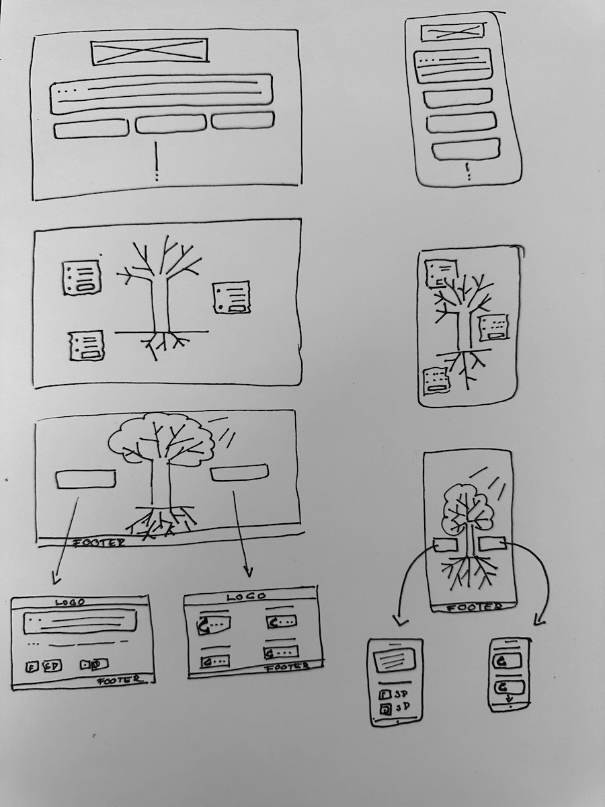

Jak to začalo?
... našly jsme v oblasti podpory well-beingu na internetu mezeru. Tou je chybějící péče o teenagery, které třeba zdánlivě nic velkého netrápí, ale necítí se dobře. Naším cílem bylo vytvořit webové stránky, které budou interaktivní a užitečné. Na následujících post-itech se můžete dozvědět, jak projekt vznikal...


Interaktivita
Metafora zvadlého stromu, který se na základě uživatelovy aktivity promění do zdravého silného stromu vyrůstajícím v krásném slunném prostředí, zrcadlí stav proměňující respondetnovi mysli.

Wireframe

Personalizace
Druhy relaxací a hlavní tři nejčastější oblasti problémů dospívajících budeme volit podle výsledků kvalifikovaných rozhovorů a kvantitativního dotazníku.